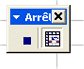

Vous savez tous ce qu'est une macro. Il n'est donc pas nécessaire de vous expliquer comment utiliser cet outil. :-° Bon, je dois bien admettre que certains ne sont pas forcément au courant de l'utilité de celle-ci et je vais devoir vous faire un petit résumé.
Qu'est-ce qu'une macro ? À quoi cela peut-il servir ?
Je pourrais m'attarder longuement sur la définition exacte des macros. Pour cela, nous avons divers sites comme www.gaboly.com. Je me contenterai, ici, de répondre aux seules questions qui sont posées ci-dessus.
La macro complémentaire, dans Excel, est un code écrit en VBA.
Elle sert à exécuter automatiquement une tâche dans Excel.
Pour que vous ayez une bonne idée des possibilités offertes, je vais vous faire faire un petit TP. Je vous fournis donc le fichier de base et nous travaillerons dessus.
Je vais en premier lieu vous montrer la façon la plus compliquée de créer une macro. Pour cela, il faut avoir certaines bases en VBA. Le but de ce tutoriel n'est pas de vous apprendre le Visual Basic. Il s'agit simplement de vous en montrer quelques caractéristiques avant de poursuivre. Cela vous sera utile au cas où vous seriez amenés à modifier une macro manuellement.
On va commencer par créer une macro qui nous permet de calculer la somme des dépenses. Pour cela, ouvrez le fichier que vous avez téléchargé.
Écriture d'une macro
Maintenant, cliquez sur le menu Outils puis sur Macros et enfin sur Visual Basic Editor. Nous pouvons maintenant créer notre première macro avec cet éditeur.
Pour créer notre première macro, vous devez cliquer sur le menu Outils puis Macros. Une petite fenêtre apparaît avec toutes les macros du classeur. Bien sûr, celui-ci étant vierge, vous n'en voyez pas.
Dans le champ « nom de la macro », mettez « somme_depenses ».
Cliquez ensuite sur Créer. La nouvelle fenêtre qui apparaît nous permet donc de taper notre code en Visual Basic.
La macro commence toujours par Sub nom de la macro() et se termine toujours par End Sub. Dans notre cas, nous avons :
Sub somme_depenses()
End Sub
Nous allons pouvoir commencer à taper notre code. Nous devons donc définir la cellule où la somme des dépenses s'affichera. Il s'agit de la case C21. Celle-ci est fusionnée avec la C22.
Voici comment lui dire que nous sélectionnons la cellule C21 (qui contient aussi la cellule C22) :
Range("C21:C22").Select
Il nous faut ensuite lui faire calculer la somme des cellules C6 à C20 dans la cellule active. Là où ça va faire réfléchir, c'est le positionnement dans les formules.
ActiveCell.FormulaR1C1 = "=SUM(R[-15]C:R[-1]C)"
Humm, hummmm ? C'est là que ça commence à chauffer derrière les yeux et entre les oreilles.
=Sum() représente la formule =Somme() qu'on peut facilement taper dans une cellule du tableau. R[-15]C:R[-1]C représente la zone de sélection par rapport à la cellule actuelle.
Il faut remonter de 15 pour sélectionner la cellule 6 et remonter de 1 pour sélectionner la cellule 20 par rapport à la cellule active (C21:C22). C'est en suivant cette logique que nous avons écrit cette ligne. Les deux points dans la formule définissent la plage comprise entre les deux cellules.
Je vous affiche le code complet de la macro.
Sub somme_depenses()
Range("C21:C22").Select
ActiveCell.FormulaR1C1 = "=SUM(R[-15]C:R[-1]C)"
End Sub
Qu'avons-nous fait exactement ?
Vous allez rire ! Cette macro permet d'écrire =somme(C6:C20) dans la cellule C21:C22.
Pour l'exécuter, vous retournez dans Excel et vous cliquez sur Outils → Macro → Macros, choisissez la macro puis cliquez sur Exécuter.
Là, vous allez me dire que c'est se casser la tête pour pas grand-chose et je ne vous donne pas tort. Nous allons donc passer ensuite à la méthode la plus simple pour créer une macro. Il fallait juste que vous sachiez ce qui se passe à l'écriture d'une macro avant de poursuivre ce tutoriel.
Je vous donne quand même un petit supplément à cette macro.
Sub somme_depenses()
Range("C21:C22").Select
ActiveCell.FormulaR1C1 = "=SUM(R[-15]C:R[-1]C)"
Range("G21:G22").Select
ActiveCell.FormulaR1C1 = "=SUM(R[-15]C:R[-1]C)"
End Sub
Allez sur la cellule C21:C22 et supprimez son contenu. Exécutez ensuite la macro et regardez ce qui a changé.
J'espère que ce premier changement vous incite à poursuivre ce tutoriel…
Après avoir aperçu l'écriture d'une macro, nous allons passer à l'outil qui nous sera le plus utile.
Nous risquons d'augmenter considérablement la taille de la macro en effectuant des tâches inutiles. Il nous faut faire uniquement le strict minimum.
Enregistrer une macro complémentaire
Cliquez donc sur Outils → Macro → Nouvelle_macro. Vous voyez qu'on peut attribuer un raccourci pour son exécution ou même l'enregistrer ailleurs que dans le classeur actuel. Nous n'allons pas nous attarder sur ces options et rester sur ce classeur.
Mettez le nom que vous voulez à votre macro (pas de caractères spéciaux) et cliquez sur « OK ». J'ai mis test comme nom de macro et « essai pour le SDZ » en description.
Vous voyez la barre d'outils s'afficher.

Elle nous servira à la fin.
C'est à partir de là qu'Excel enregistre tout ce qu'on fait, il nous faut donc éviter les clics superflux.
Sélectionnez la cellule D28 ;
appuyez sur la touche +=} pour faire le signe égal ;
sélectionnez la cellule G21 ;
appuyez sur 6-| pour faire le signe moins ;
sélectionnez la cellule C21 ;
validez avec la touche Entrée ;
sélectionnez, à nouveau, la cellule D28.
Lors de l'enregistrement, vous devez avoir en G28 :
Citation : Excel
=G21-C21
Si tout s'est bien passé, nous avons nos deux totaux de renseignés et la somme restante.
Appuyer sur le bouton « Arrêter l'enregistrement » de la barre d'outils macros.
Allez voir l'éditeur, Microsoft Visual Basic, qui contient nos deux macros.
Vous pouvez remarquer une grande différence entre celles-ci.
Sub somme_depenses()
Range("C21:C22").Select
ActiveCell.FormulaR1C1 = "=SUM(R[-15]C:R[-1]C)"
Range("G21:G22").Select
ActiveCell.FormulaR1C1 = "=SUM(R[-15]C:R[-1]C)"
End Sub
Sub test()
'
' test Macro
' essai pour le SDZ
'
'
ActiveCell.Offset(-2, -6).Range("A1:B3").Select
ActiveCell.FormulaR1C1 = "=R[-7]C[3]-R[-7]C[-1]"
ActiveCell.Range("A1:B3").Select
End Sub
L'arrangement manuel d'une macro enregistrée
C'est dans des moments comme celui-ci qu'il est possible de simplifier la macro, et c'est ce que nous allons faire en fusionnant les deux précédentes dans une seule et même macro.
Nous gardons donc la première macro :
Sub somme_depenses()
Range("C21:C22").Select
ActiveCell.FormulaR1C1 = "=SUM(R[-15]C:R[-1]C)"
Range("G21:G22").Select
ActiveCell.FormulaR1C1 = "=SUM(R[-15]C:R[-1]C)"
End Sub
Nous allons l'arranger avec ce qu'on a dans la seconde.
Nous devons garder la formule utilisée.
ActiveCell.FormulaR1C1 = "=R[-7]C[3]-R[-7]C[-1]"
Mais juste avant celle-ci, nous allons donner la cellule cible.
Sub somme_depenses()
Range("C21:C22").Select
ActiveCell.FormulaR1C1 = "=SUM(R[-15]C:R[-1]C)"
Range("G21:G22").Select
ActiveCell.FormulaR1C1 = "=SUM(R[-15]C:R[-1]C)"
Range("D28:E30").Select
ActiveCell.FormulaR1C1 = "=R[-7]C[3]-R[-7]C[-1]"
End Sub
Supprimez tout le reste (l'autre macro). Il ne doit vous rester que celle-ci.
Cette seule macro permet donc d'inscrire les 3 formules dans les trois cellules. 1 macro pour 3 résultats en un seul coup. Je vous accorde que de poser une macro de ce genre n'est guère très intéressant, mais passer par là n'est certainement pas une mauvaise chose. Nous allons désormais pouvoir poursuivre avec d'autres macros complémentaires et d'autres façons de les utiliser.
Le nettoyage des cellules
Il n'y a pas de grosses questions à se poser là-dessus, on va juste faire le vide dans toutes les cellules où se trouvent nos chiffres.
Cliquez sur Outils → Macro → Nouvelle_macro et nommez celle-ci « effacer ». Cliquez sur OK.
Sélectionnez les cellules de C6 à C22 ;
appuyez sur CTRL ou MAJ (selon la version d'Excel) pour ajouter une sélection ;
restez appuyés et sélectionnez les cellules de G6 à G22 ;
et la cellule D28 ;
appuyer sur la touche Suppr de votre clavier.
Arrêtez l'enregistrement de la macro.
Retournez voir l'éditeur. Ce dernier doit afficher :
Sub somme_depenses()
Range("C21:C22").Select
ActiveCell.FormulaR1C1 = "=SUM(R[-15]C:R[-1]C)"
Range("G21:G22").Select
ActiveCell.FormulaR1C1 = "=SUM(R[-15]C:R[-1]C)"
Range("D28:E30").Select
ActiveCell.FormulaR1C1 = "=R[-7]C[3]-R[-7]C[-1]"
End Sub
Sub effacer()
'
' effacer Macro
' essai pour le SDZ
'
'
ActiveCell.Offset(-22, -1).Range("A1:A17,E1:E17,B23:C25").Select
ActiveCell.Activate
Selection.ClearContents
End Sub
Oups !
Nous avons commis une erreur. Nous voulons juste effacer les résultats et non la totalité, ce qui implique d'effacer juste C21, G21 et D28. Appuyez sur « CTRL + Z » pour annuler cette dernière opération.
Modifions notre macro.
Sub effacer()
'
' effacer Macro
' essai pour le SDZ
'
'
ActiveCell.Offset(-22, -1).Range("A1:A17,E1:E17,B23:C25").Select
ActiveCell.Activate
Selection.ClearContents
End Sub
Nous gardons donc l'activation de cellule et l'effacement. Nous ne devons modifier que la première ligne qui ne cible pas les bonnes cellules. Mettons donc :
Sub effacer()
'
' effacer Macro
' essai pour le SDZ
'
'
Range("C21,G21,D28").Select
ActiveCell.Activate
Selection.ClearContents
End Sub
Et, au passage, on va enlever l'inutile. Ce qui nous donnera :
Sub effacer()
Range("C21,G21,D28").Select
ActiveCell.Activate
Selection.ClearContents
End Sub
Voilà qui est bien mieux.
Nous pouvons effacer simplement le contenu des trois cellules de résultats à l'aide de cette macro.
Peut-on faire plus simple que d'aller cliquer sur « Outils → Macro → Macros » et de sélectionner la macro « supprimer » puis de cliquer sur « OK » ?
Vous vous dites : « je vais devoir supprimer les chiffres au moins 200 fois dans ma journée car je veux calculer le budget de chacun de mes clients et je dois avouer qu'un simple clic ça m'aiderait bien ».
Je vais alors vous répondre qu'on va arranger ça. Ce n'est pas très compliqué.
Pour aider à la tâche, il serait bien de pouvoir lier cette macro à un objet comme un bouton ou une image. Excel nous offre quelques possibilités sur ce point-là, que nous allons aborder dans cette partie du tutoriel.
Comment exécuter la macro ?
Il existe plusieurs façons d'exécuter celle-ci. Je vais en énumérer 3 :
Un bouton Excel ;
une zone de texte ;
une image.
Un bouton Excel
Pour créer un bouton Excel, il nous faut la barre d'outils Boîte à outils Contrôles.
Cliquez donc sur Affichage puis Barre d'outils et cochez Boîte à outils Contrôles. Cliquez sur l'icône Bouton de commande.
Cliquez sur votre classeur, restez appuyés sur le bouton droit de la souris et tracez un rectangle. Il sera votre bouton. Relâchez quand la taille vous semble correcte.
Faites un clic droit sur le bouton et choisissez Objet Bouton de commande → Édition. Vous pouvez changer le nom du bouton. J'ai mis « EFFACER ».
Un petit rappel de nos deux macros :
Sub somme_depenses()
Range("C21:C22").Select
ActiveCell.FormulaR1C1 = "=SUM(R[-15]C:R[-1]C)"
Range("G21:G22").Select
ActiveCell.FormulaR1C1 = "=SUM(R[-15]C:R[-1]C)"
Range("D28:E30").Select
ActiveCell.FormulaR1C1 = "=R[-7]C[3]-R[-7]C[-1]"
End Sub
Sub effacer()
Range("C21,G21,D28").Select
ActiveCell.Activate
Selection.ClearContents
End Sub
Faites un clic droit sur le bouton et choisissez Visualiser le code. Mettez-y le code de la macro « effacer » mais ne touchez pas aux lignes Sub.
Ce qui donnera :
Private Sub CommandButton1_Click()
Range("C21,G21,D28").Select
ActiveCell.Activate
Selection.ClearContents
End Sub
Un simple clic sur le bouton suffira à effacer le contenu des 3 cellules. Les boutons Excel sont assez pénibles à embellir et à gérer. Il faut faire de multiples manipulations pour arriver à un résultat peu attrayant.
La zone de texte
On peut utiliser une zone de texte aussi. Là, c'est du simple et rapide.
La barre d'outils « dessin » doit être affichée. Si ce n'est pas le cas, cliquez sur Affichage → Barre d'outils → Dessin.
Cliquez ensuite sur l'icône Zone de texte…
… et créez un rectangle comme pour le bouton Excel.
Je vous laisse gérer votre zone de texte comme vous le voulez (clic droit sur le bord puis Format de la zone de texte). Vous pouvez modifier la couleur du fond, la taille du bord,…
Une fois que vous avez fait cela, vous faites un clic droit sur le bord et vous cliquez sur Affecter une macro. Choisissez la macro « effacer » et validez ce choix. Cliquez en dehors de votre zone de texte pour que la macro ne soit plus sélectionnée. Maintenant, si vous cliquez dessus, la macro sera exécutée.
Une image
J'ai créé une petite image pour l'occasion.
Récupérez celle-ci à l'aide d'un clic droit et choisissez « Enregistrer l'image sous… ».
Cliquez ensuite sur le menu Insertion → Image → À partir du fichier et sélectionnez celle-ci. Ajustez-la si besoin est.
Faites ensuite un clic droit dessus et choisissez Affecter une macro. Sélectionnez la macro « effacer » comme précédemment.
Vous pouvez essayer de vous-mêmes d'affecter la macro « somme_depenses » à ce bouton.
Si vous vous débrouillez bien avec un logiciel de dessin ou de retouche photos, vous pourrez vous faire de beaux boutons. Affecter une macro à une image, un bouton ou une zone de texte peut permettre de naviguer entre plusieurs feuilles par de simples clics. On peut, par exemple, faire une page de garde pour un fichier assez volumineux et naviguer à partir de là entre les onglets du classeur.
Et si on le faisait ?
On peut par exemple aller voir les graphiques liés aux tableaux.
Pour cela, cliquez sur le menu Outils → Macro → Nouvelle Macro…. Nommez celle-ci Graphs.
Cliquez ensuite sur l'onglet Feuil2 en bas d'Excel, à gauche.
Arrêtez l'enregistrement.
Cliquez maintenant sur le menu Outils → Macro → Nouvelle Macro… et nommez cette dernière Accueil.
Cliquez sur l'onglet Feuil1 et arrêtez l'enregistrement.
Récupérez cette image et placez-la sur la feuille 1 de votre classeur.
Affectez-lui la macro Graphs.
Cliquez ensuite dessus et sur le bouton que j'ai déjà placé, et affectez-lui la macro Accueil.
Sur la première page, vous devez avoir 2 boutons (« Effacer » et « Graphs ») et sur la feuille 2, vous devez avoir 1 bouton « retour » permettant de revenir très vite au premier onglet.
Nous pouvons avoir un fichier à imprimer dans plusieurs formats différents.
Admettons que nous devions imprimer une affiche en format A4 et en format A6 (Bristol). Nous pouvons créer 2 macros, chacune affectée à un bouton.
Ainsi, d'un simple clic, nous imprimons soit en A4 soit en A6. Au lieu de modifier à chaque fois le format, nous cliquons sur 1 seul bouton que nous avons rattaché à une macro.
Ce ne sont pas les possibilités qui manquent. Il faut juste arriver à comprendre le VBA et arriver à ajuster les macros le plus simplement possible. Croyez-moi, quand on a une centaine de macros, on cherche à les réduire au maximum.
J'espère que ce tuto aura aidé les plus novices d'entre vous à comprendre comment se présente une macro complémentaire, à quoi elle peut servir. Ce tutoriel n'est qu'une approche des macros. Si vous voulez poursuivre après ça, je ne peux que vous suggérer de vous orienter sur des sites spécialisés en Visual Basic et dans Excel.